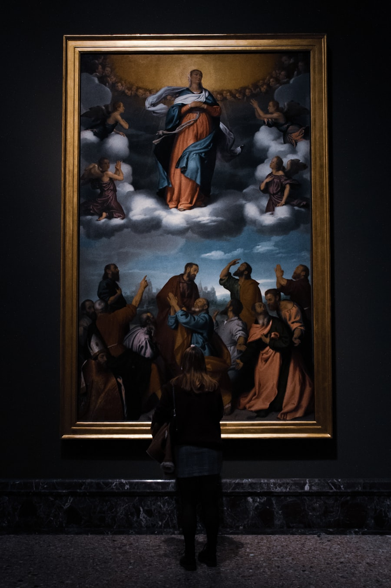
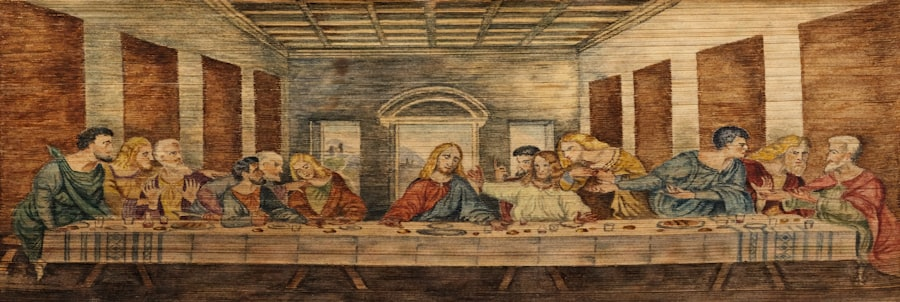
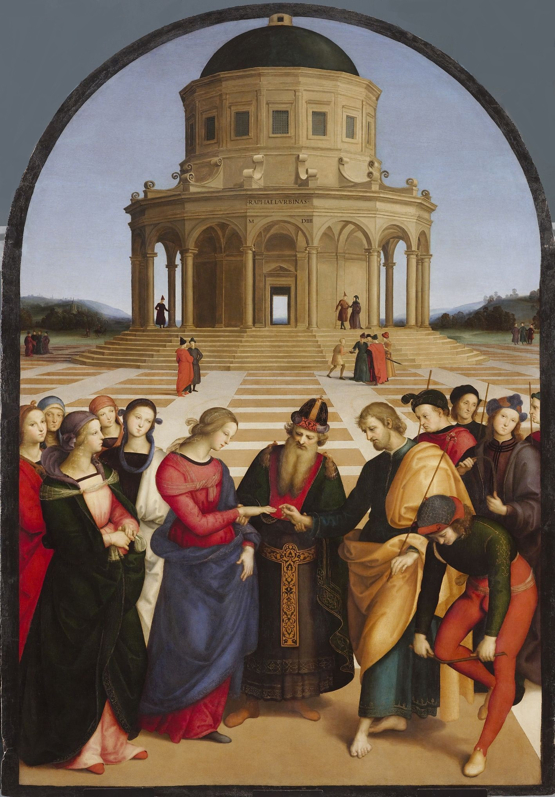
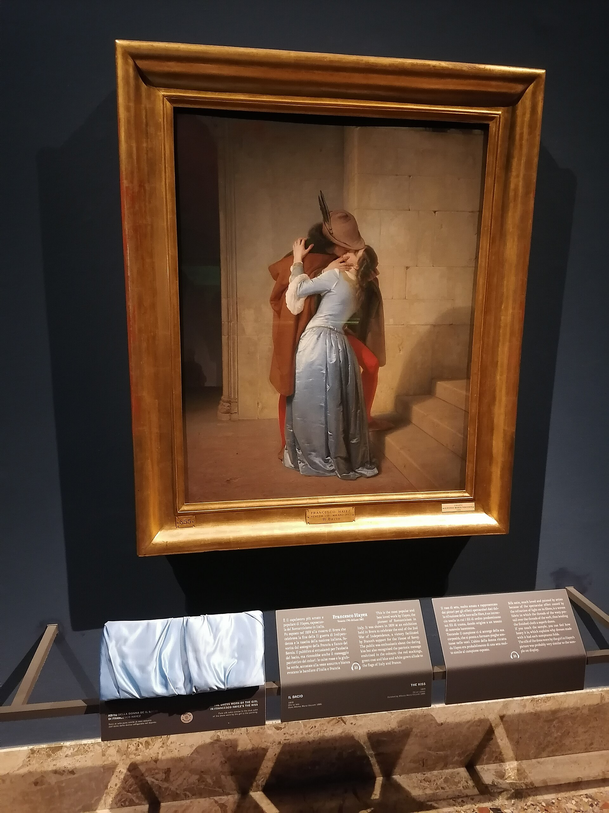
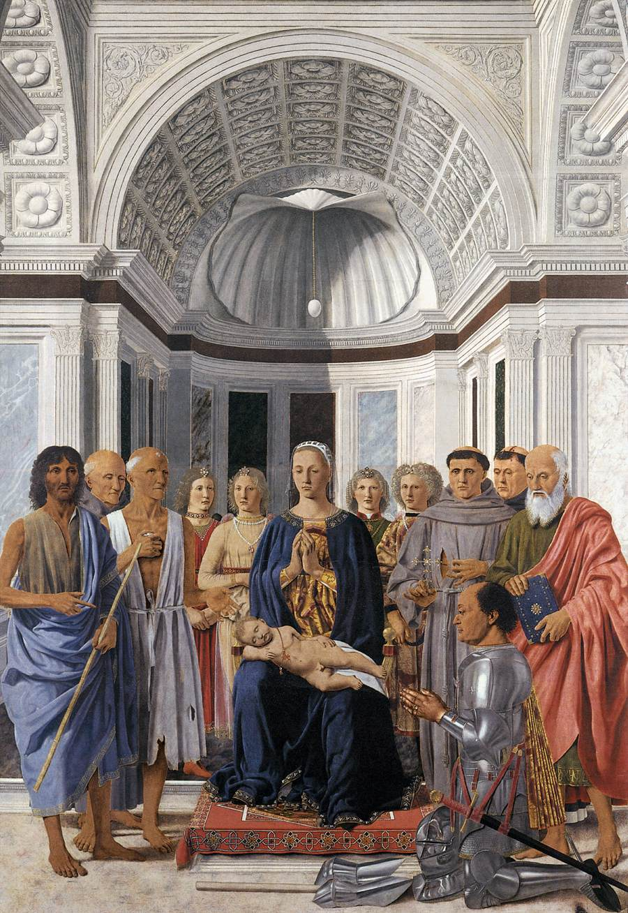
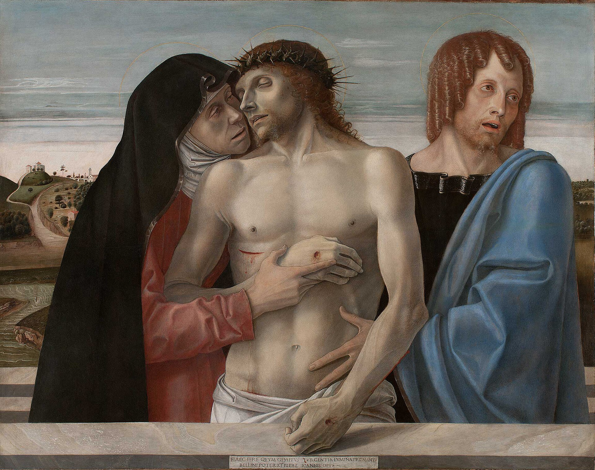
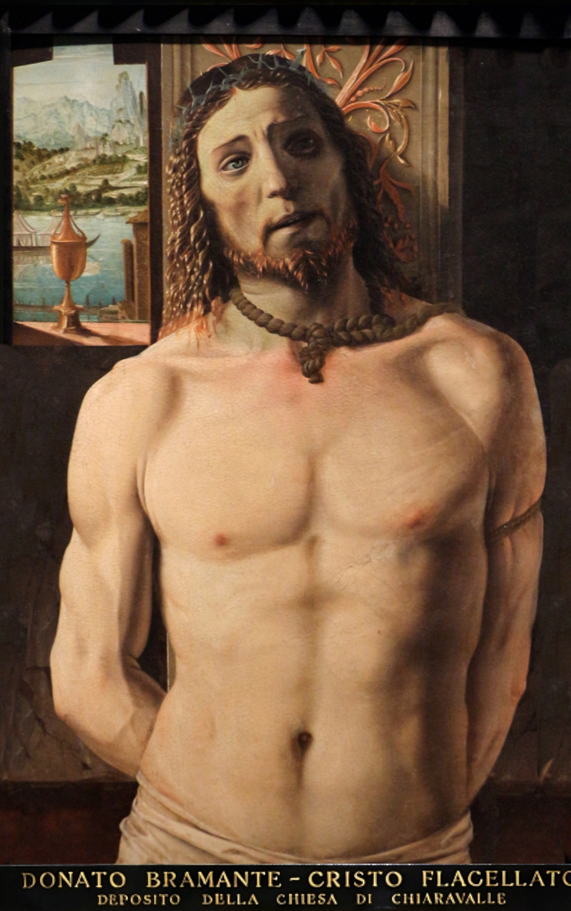
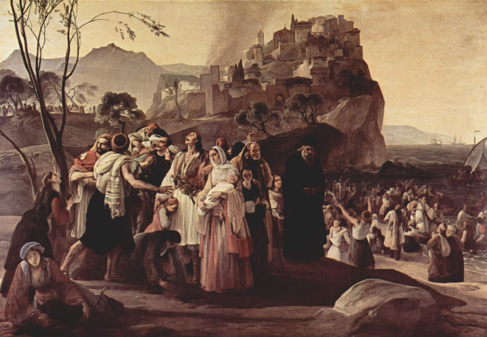
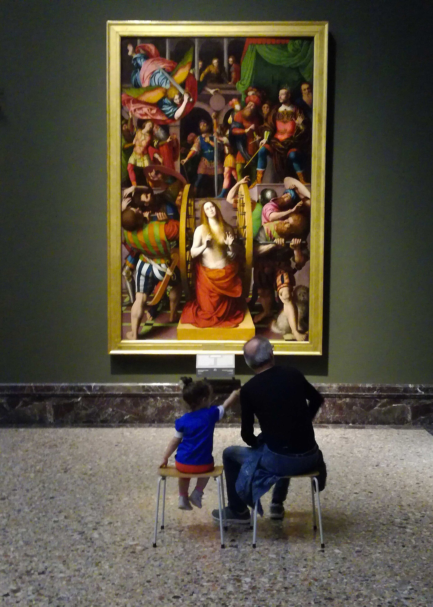

米兰最重要的美术馆，藏品的起点是拿破仑时代从伦巴第教堂修道院“征收”的艺术品。镇馆三宝：曼特尼亚《哀悼基督》的透视核弹、卡拉瓦乔《以马忤斯的晚餐》的光影、海耶茨《吻》的浪漫主义--外加拉斐尔、贝利尼、委罗内塞的一整墙。
看点路线
Il Percorso
- 1入口庭院拿撒肋楼梯（近似电影《复仇者》名场面？其实是《猜火车》同款构图地）拍照
- 26-7 室：曼特尼亚《哀悼基督》
- 315 室：卡拉瓦乔《以马忤斯的晚餐》
- 424/37 室：海耶茨《吻》
- 5拉斐尔《圣母的婚礼》与威尼斯大师群（委罗内塞《利未家的宴会》风格巨制）
馆藏名作
Pinacoteca di Brera
绘画Pittura · 10 件

《哀悼基督》
从脚底方向仰视基督--绘画史上最激进的一次透视：缩短的双脚正对观众，钉孔与绷紧的布纹纤毫毕现。数学制造的“你在场”。

《以马忤斯的晚餐》
复活的基督被认出的瞬间：一人后仰掀翻椅子、一人双手张开。卡拉瓦乔逃亡罗马之后的作品，光影更暗、戏剧更内敛。

《圣母的婚礼》
21 岁的成名作：16 边形神庙的地面网格精确到能当数学教具。同厅挂着老师佩鲁吉诺的同题旧作--师徒对比，一目了然。

《吻》
中世纪巷口的恋人：斗篷与裙裾在阴影里融成一体。统一战争前夜的“政治浪漫”，后来成了意大利的非官方形象照。

《蒙泰费尔特罗祭坛画》
蛋中孵化的完美几何：圣母与天使环拱圣婴，透视的灭点精确落在圣婴的珊瑚项链上。皮耶罗把数学画成了神学。

《圣殇》
威尼斯画派之父的早期杰作：圣母与圣约翰扶着基督，背景的宁静风景预言了整个威尼斯画派的“忧伤的金色”。

《柱上的基督》
未来的圣彼得大教堂建筑师年轻时画的画：透视炫技的拱廊与真实的刑柱并置--“建筑师的画”，每一根线都可用尺子校验。

《美狄亚》
弑子前的美狄亚持刀回望：浪漫主义对“复仇女性”的同情。与《吻》同一画家--他能画最甜的告别，也能画最狠的心。
《圣安东尼的诱惑》
青年委罗内塞的奇幻场景：圣徒被三只魔怪围攻，远山如梦。威尼斯式的色彩炫技，二十年后他将画出让宗教裁判所头疼的《利未家的宴会》。

伦巴第与威尼斯画派馆藏群
布雷拉的底牌：洛伦佐·洛托的肖像、莫罗尼的“真实主义”、丁托列托的巨幅叙事。若你的行程含威尼斯，这里是预习教室；若不含，这里是替代课堂。
历史故事
Le Storie
壹“合法化掠夺”的意外遗产
1796 年拿破仑的意大利军团横扫伦巴第。军政府与美术学院达成协议：从教堂与修道院“科学征收”艺术品，集中到布雷拉--名义是“教育公众”，实际为可能的巴黎搬运做中转。
1815 年维也纳会议后，大部分被运往巴黎的作品物归原主。但留在布雷拉的部分形成了法律模糊地带：原修道院多已解散，没有“合法主人”可归还。
结果是讽刺的：一次抢劫的中转仓库，阴差阳错成了永久馆藏。美术馆底楼铭牌写着它的历史，包括那段不太光彩的开局。
贰曼特尼亚的“脚底视角”
《哀悼基督》的构图在 1480 年是核弹级的：画家把镜头放在死者的脚端，用缩短透视强迫观众“进入”停尸现场。
透视学的原理来自布鲁内莱斯基与阿尔伯蒂，但把它用于“制造情感冲击”而非“排列建筑”，曼特尼亚是第一人。他毕生痴迷古罗马文物，人体带着大理石的冷静。
这幅画也是美术馆的“镇馆级自拍点”：每个人都想在基督的脚底方向拍一张。馆方默许了这种“冒犯”--曼特尼亚要的就是让你站在那儿，无处可躲。
叁《吻》里的政治
1859 年，奥地利仍占着伦巴第，撒丁王国联合法国对奥开战。海耶茨受托画一幅“献给意大利”的作品，他交出的答卷是：不画战争，画一个吻。
画面细节全是密码：男孩的斗篷暗色、女孩裙裾蓝色、背景阴影里的窥视者。它从未被官方认证为政治画，但 1859 年的观众都懂。
2011 年意大利统一 150 周年，官方选择《吻》作为主视觉。一幅“看不见的政治画”，最终成了国家的脸。
肆拿破仑的青铜像与“战神”的尴尬
入口庭院中央的青铜像是卡诺瓦雕的拿破仑--原本全副武装、手握金球与胜利女神，是标准的“战神式”造像。
铸造完成后评价两极：有人嫌它“太古典像奥古斯都”，拿破仑本人更喜欢卡诺瓦妹妹那尊大理石的妹妹像（帕多瓦）。这尊青铜后来被安放在布雷拉庭院，从“战神”改行了“守门员”。
庭院与穹顶下的双坡道楼梯是米兰最上镜的学院空间--建筑设计师朱塞佩·皮耶尔马里尼（也是斯卡拉歌剧院的设计者）。
伍《蒙特费尔特罗祭坛画》的“几何神学”
皮耶罗·德拉·弗朗切斯卡为乌尔比诺公爵画的祭坛画：圣母与天使环拱圣婴，背景是一枚完美透视的鸵鸟蛋（公爵纹章）。
皮耶罗是画家里的数学家（他写过透视论著），这幅画的灭点、蛋的椭圆与人物间距都可几何验证--“数学即神学”的文艺复兴宣言。
找那只悬挂的鸵鸟蛋：它悬在圣婴正上方，象征“无原胎的诞生”--一只蛋讲完一则教义，这是皮耶罗的省略法。
陆卡拉瓦乔的“第二晚餐”
布雷拉的《以马忤斯的晚餐》（1606）与伦敦国家美术馆那幅同题材（1601）相隔五年：同一个是“认出瞬间”，构图却更收敛、人物更少、光影更暗。
五年间卡拉瓦乔经历了杀人、逃亡与马耳他囚禁--对比两幅画，等于看到巴洛克戏剧从“外放”转向“内收”。
看桌上的面包与水果：静物的写实度在伦敦版更“炫技”，米兰版更“安静”--逃亡者的画，连苹果都不敢大声。
柒美术馆与美院的“共生”
布雷拉至今仍是“馆校一体”：美术学院的学生可凭证件免费入馆临摹，某些展厅常年立着画架--你看到的临摹者可能是未来的名家。
馆内的天文台圆顶（18 世纪）与图书馆同属这个学院综合体--天文学家斯基亚帕雷利（“发现”火星运河那位）曾在此工作。
看画时留意墙角的学院徽章：这个机构的逻辑是“收藏即教材”--每一件展品都是某堂课的教具。
捌布雷拉街区的“画材生态”
出了美术馆，布雷拉街区本身就是一座开放式美术学院：颜料店、修复工作室、版画铺与艺术书店在石板路两侧排开。
最老的一家画材行开了两百多年，木柜台上的颜料抽屉还是拿破仑时代的--伦巴第的美术生至今来此买亚麻油。
周日有古董市集（Mercato di Brera 的部分摊位）--买一幅无名画家的旧作，是本地文青的传统节目。
玖《美狄亚》与被忽视的海耶茨
《吻》的光环太强，多数游客错过同厅的《美狄亚》：弑子前的女巫持刀回望，眼神里的悲愤比刀更冷。
海耶茨一生画了大量的历史与文学题材，晚年还教出了一批意大利浪漫主义者--他是 19 世纪米兰艺术圈的“总编辑”。
把《吻》与《美狄亚》对照看十分钟：同一位画家笔下的爱与恨，构图语言几乎互为镜像。
拾周四夜场的“包馆体验”
布雷拉每周四开到 22:15--夜场人流量是白天的三分之一，《哀悼基督》前能独处数分钟。
夜间的照明会切换到“黄昏模式”：壁画的暖光更足、展厅更静，是摄影者与临摹者的黄金档。
夜场结束后步行 8 分钟到纳维利或布雷拉小广场喝一杯 aperitivo--米兰的“艺术夜”标准动线。
参观贴士
Consigli Pratici
- 周四夜场（至 22:15）人最少，适合静静看《哀悼基督》
- 语音导览含“20 件必看”精选路线，时间紧可 90 分钟走完
- 布雷拉街区本身是米兰最有味道的艺术区：古董店、画材行、安静的小广场，看完画顺路逛
- 馆内咖啡厅在藏书室旁（Caffe delle Arti），下午茶氛围好
- 周一闭馆（米兰艺术三馆同日闭），排行程注意
- 底层售票处可寄存背包，拍照禁闪光
顺路同游
Da Non Perdere